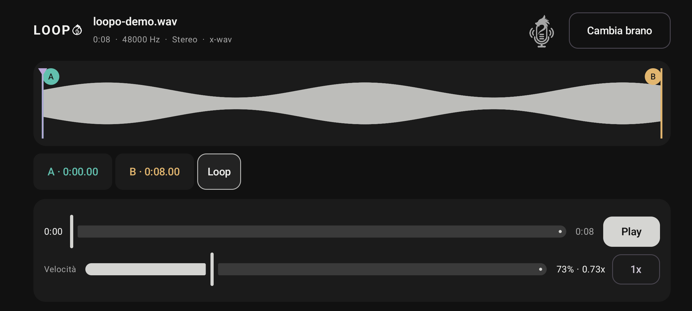

App Android per studiare musica
Suona al
tuo ritmo.
Isola un passaggio, rallentalo senza cambiare tonalità e ripetilo finché ti viene. Quando hai le mani sullo strumento, di’ «Ehi Lupo».

Prova Loopo
Dal primo brano al controllo con la voce.